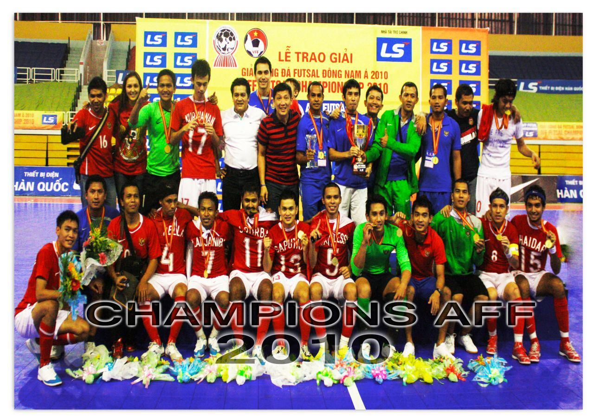

Futsal adalah olahraga permainan yang menggunakan bola sebagai alat permainannya. Pertandingan futsal dapat dilakukan di dalam ruangan (indoor) ataupun di luar ruangan (outdoor). Sejarah olahraga futsal diresmikan FIFA pada 1930 setelah ditemukan Juan Carlos Martini. Dia merupakan orang Uruguay yang pertama kali memprakarsai permainan futsal. Hingga kini, olahraga ini sudah tersebar di lebih dari 100 negara. Ada juga Piala Dunia Futsal menjadi kompetisi terbesar untuk olahraga futsal. Permainan futsal adalah salah satu olahraga bola besar yang dikembangkan dari permainan sepakbola. Olahraga ini juga tak kalah populer, terutama di kalangan anak muda. Futsal juga marak dikompetisikan, baik di level regional, nasional, maupun internasional. Nah bagi anda para pegiat futsal, pengetahuan terkait permainan ini wajib untuk diketahui. Mulai dari pengertian, teknik dasar, dan peraturan merupakan beberapa topik yang wajib bagi anak futsal. Tujuan olahraga ini sama seperti sepakbola lapangan besar, yaitu mencetak gol sebanyak-banyaknya ke gawang tim lawan. Bedanya, futsal dimainkan oleh dua regu tim dengan masing-masing diisi lima pemain.
Cara bermain atau teknik dasar futsal secara umum mirip dengan teknik dasar sepakbola.
1.Passing atau Umpan Passing atau mengumpan merupakan teknik dasar yang harus dikuasai para pemain futsal. Teknik ini dilakukan dengan cara mengayunkan kaki hingga mengenai bola. Passing bisa menggunakan kaki bagian luar, dalam, punggung, dan sisi samping
2.Kontrol Bola Teknik dasar futsal lainnya adalah kontrol bola. Adapun kontrol bola dilakukan dengan menggunakan kaki bagian dalam dan luar. Kontrol bola memanfaatkan sol sepatu untuk menghentikan laju bola dan menguasainya.
3.Dribbling atau Menggiring Bola Setiap pemain futsal haruslah menguasai teknik dribbling atau menggiring bola. Tujuan dari teknik dribbling ini adalah pemain dapat melewati pemain lawan sambil membawa bola. Teknik dribbling bisa menggunakan kaki bagian dalam, luar, dan punggung.
4.Tendangan atau Shooting Tendangan atau shooting merupakan teknik dasar futsal memanfaatkan bagian ujung sepatu. Jika seorang pemain memiliki teknik shooting yang mumpuni, maka semakin besar pula peluangnya untuk mencetak gol.
5.Tackling Tackling atau menyeleding bola merupakan teknik dasar yang digunakan untuk merebut bola dari lawan. Namun untuk melakukan tackling haruslah hati-hati. Hal ini demi mengurangi risiko cedera pemain. Tackling dapat dilakukan dengan berdiri (standing) dan meluncur (sliding tackle).
6.Heading Heading merupakan teknik dasar futsal yang memanfaatkan bagian kepala. Bagian kepala yang digunakan untuk menyundul bola adalah ubun-ubun.
1. Ukuran Lapangan Futsal Lapangan futsal berbentuk persegi panjang.Permukaan lapangan harus rata dan tidak licin. Panjang lapangan 25-42 meter, lebar lapangan 15-25 meter. Lapangan ditandai dengan garis-garis yang berfungsi sebagai pembatas. Dua garis terluar yang lebih panjang disebut garis pembatas lapangan, dan dua garis yang lebih pendek disebut garis gawang. Lebar seluruh garis adalah 8 cm. Lapangan dibagi menjadi dua bagian pada bagian tengah lapangan. Titik tengah lapangan ditandai dengan sebuah titik. Titik tengah lapangan berada pada lingkaran tengah lapangan dengan radius tiga meter. Daerah seperempat lingkaran di depan garis gawang memiliki radius enam meter. Titik penalti berada enam meter dari titik tengah garis gawang. Titik penalti kedua berada 10 meter dari titik tengah antara posisi tiang gawang vertikal. Titik tendangan pojok memiliki radius 25 cm, di setiap sudut lapangan.
2. Bola Bola futsal yang digunakan memiliki diameter lingkaran sebesar 62 sampai 64 cm dengan berat 0,4 sampai 0,44 kg. Tekanan angin bola sebaiknya berukuran 0,4 sampai 0,6 atmosfer (400-600g/cm), dan pantulan yang dihasilkan setinggi 55 sampai 65 cm.
3. Ukuran Gawang Futsal Gawang terdiri atas dua buah tiang sejajar dalam posisi vertikal dengan jarak yang sama dari setiap sudut dan pada sisi atasnya dihubungkan dengan tiang horizontal. Gawang harus diletakkan tepat pada tengah-tengah garis gawang. Jarak kedua tiang vertikal adalah tiga meter dan jarak dari sisi bawah batangan atas ke dasar permukaan lapangan adalah dua meter. Tiang vertikal dan tiang horizontal memiliki diameter 8 cm. Jaring gawang terbuat dari tali rami, goni, atau nilon, yang dikaitkan pada kedua tiang vertikal dan horizontal pada sisi belakang gawang. Kedalaman gawang adalah jarak dari ujung bagian dalam dari posisi gawang langsung ke arah sisi luar lapangan, minimal 80 cm pada bagian atas dan 100 cm pada bagian bawah.
4. Pemain Futsal Dalam futsal, dimainkan oleh dua tim. Masing-masing tim terdiri dari lima orang. Setiap pemain memiliki posisi masing-masing, seperti kiper, flank, anchor, dan pivot. Sedangkan jumlah pemain cadangan maksimal sebanyak tujuh orang. Jumlah pergantian pemain selama pertandingan berlangsung tidak dibatasi. Seorang pemain yang telah diganti dapat masuk kembali ke lapangan untuk menggantikan pemain lainnya. Penjaga gawang boleh berganti tempat dengan pemain lainnya.
5. Waktu Permainan futsal terdiri dari dua babak, masing-masing babak memiliki durasi waktu selama 20 menit. Setiap tim diberi satu kali kesempatan untuk meminta waktu time out selama satu menit. Sedangkan untuk waktu istirahat, diberikan waktu selama 10 menit. Namun, waktu bermain futsal juga dapat diubah sesuai kesepakatan antara wasit dan kedua tim. Kesepakatan waktu yang digunakan harus dibuat sebelum permainan dimulai.
6. Wasit Wasit merupakan seseorang yang memimpin jalannya pertandingan. Dalam sebuah permainan futsal terdapat dua orang wasit, yakni wasit utama dan wasit kedua. Keduanya memiliki wewenang penuh dalam menegakkan peraturan pertandingan.
7. Pelanggaran Secara garis besar, ada dua jenis pelanggaran, yakni pelanggaran berat dan ringan. - Kartu Kuning Secara individu, seorang pemain yang melakukan pelanggaran akan diberi peringatan. Satu di antaranya berbentuk pemberian kartu kuning. Kartu kuning diberikan jika:
Mengeluarkan kata-kata yang tidak pantas. Tetap melakukan pelanggaran, meski telah diberi peringatan. Mengulur-ngulur waktu dimulainya kembali pertandingan. Melanggar jarak saat tendangan hukuman berlangsung. Melanggar prosedur pergantian pemain. Sengaja meninggalkan lapangan tanpa seizin wasit.
- Kartu Merah Seorang pemain yang diberikan kartu merah, diharuskan untuk meninggalkan lapangan pertandingan dan tidak diperbolehkan bermain lagi. Kartu merah diberikan jika:
Bersalah, bermain sangat kasar. Bersalah, berkelakuan kasar. Meludahi lawan atau orang lain. Menghalangi gol yang dibuat tim lawan dengan menggunakan tangan. Secara jelas menggagalkan secara ilegal kesempatan lawan untuk mencetak gol. Menggunakan kata-kata yang bersifat menghina. Menerima kartu kuning kedua.
Timnas Futsal Indonesia berhasil menjuarai MNC International Futsal Cup 2022 yang diselenggarakan di Kota Pelajar Yogyakarta. Timas Garuda mengunci gelar juara saat mengalahkan club asal Thailand Thamassat Stalion pada laga terakhir dengan skor tipis 1- 0 di GOR Among Rogo, Yogyakarta pada hari ini (9/9/22). Gol penentu kemenangan Indonesia dihasilkan Firman Adriansyah. Pemain asal Cosmo JNE itu mencetak gol pada menit ke-23. Kemenangan ini melengkapi dua hasil positif sebelumya, Tercatat Timnas Garuda berhasil sapu bersih 3 laga yang dilakoninya dengan kemenangan dan berhasil mengumpulkan 9 poin. Dengan hasil gemilang itu diharapkan Timnas Indonesia siap untuk berlaga di AFC Futsal Asian Cup di Kuwait akhir September nanti. Wakil Ketua Umum Federasi Futsal Indonesia (FFI) Syafril Nasution, turut memberikan ucapan selamatnya untuk hasil luar biasa yang di dapat para anak asuh pelatih kepala, Mohammad Hashemzadeh tersebut. "Selamat atas keberhasilan Timnas Indonesia menjuarai MNC International Futsal Cup 2022 dengan tiga kali kemenangan, Semoga Timnas Futsal Indonesia bisa meraih prestasi yang sangat baik di AFC Futsal Asian Cup di Kuwait," katanya. Hal serupa juga diungkapkan Hashemzadeh usai penyerahan piala sebagai juara, dirinya mengucapkan terima kasih kepada para pemain. Semua disebutnya sudah berusaha memberikan yang terbaik. "Kalau bisa juara bagus, semua suka juara, tidak ada yang mau kalah. Namun target kami berbeda, karena ini adalah persiapan untuk ke Piala Asia Futsal," kata pelatih asal Iran itu. Soal pemain baru atau debutan yang akan dibawa ke Kuwait, Coach Hashemzadeh mengatakan peluang itu selalu ada. Tinggal bagaimana nanti penilaian terakhir dalam beberapa ke depan. "Ya pasti ada pemain debutan yang akan berangkat ke Kuwait. Meski saya harus melihat lagi di uji coba berikutnya, termasuk para pemain dari BTS," tutupnya. 
Prestasi terbesar timnas futsal Indonesia di kawasan ASEAN bisa jadi adalah meraih gelar juara pada Piala AFF Futsal 2010. Sama seperti di cabang sepak bola, timnas futsal Indonesia juga kerap tak berjodoh dengan gelaran Piala AFF. Dari 14 kali keikutsertaan di ajang Piala AFF Futsal, timnas futsal Indonesia lima tiga kali menjadi runner-up dan lima kali menghuni peringkat ketiga. Namun, timnas futsal Indonesia sempat menggondol satu gelar juara pada edisi Piala AFF Futsal 2010. Bermain di Ho Chi Minh City, Vietnam, Piala AFF Futsal 2010 terasa sedikit berbeda karena tim kontestan tak sebanyak biasanya. Dengan format satu grup dan dilanjutkan dengan babak final, hanya lima tim yang ambil bagian di Piala AFF Futsal 2010 yakni Malaysia, Vietnam, Filipina, Myanmar, dan Indonesia. Tim kuat ASEAN, Thailand, memilih tak berpartisipasi karena mengikuti turnamen lain. "Thailand mundur karena kondisi yang kurang baik, Piala AFF Futsal 2010 jadi target utama kita karena kesempatan terbuka," ujar Sayan Karmadi, pemain timnas futsal Indonesia di Piala AFF Futsal 2010.
10123073
IF-2
Universitas Komputer Indonesia
Juara 1 Futsal Kadis Pendidikan Sumatra Utara
Juara 2 Futsal Tapanuli Selatan
Juara 1 Futsal Sibolga CUP